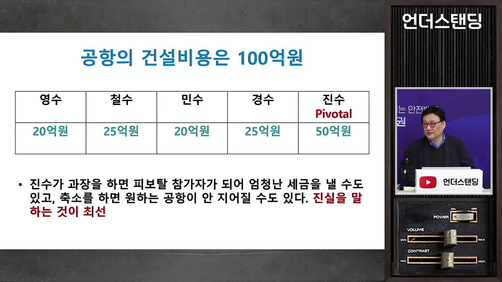

[한순구의 노벨경제학 3부] 결사반대하던 방폐장이 찬성 90%로 뒤집힌 비결. 야구 비디오 판독 도입했더니 홈팀 승률이 왜 올랐을까 (연세대 경제학과 한순구 교수)
▶ 원본 영상 보기한눈에 보기
- 비디오 판독 도입 뒤 야구 홈팀 승률이 오히려 올랐고, 투구를 전부 기계가 판정하는 ABS 도입 뒤에는 내려갔다. 판독 횟수가 팀당 2번뿐이라 심판이 홈팀에 계속 유리하게 부는 여지가 남았다는 해석이다.
- 메커니즘 디자인(2007년 노벨상)은 사람들이 거짓말 대신 진실을 말하는 편이 이득이 되도록 제도를 설계하는 이론이다.
- 비크리 경매(2등 가격 낙찰)와 클라크-그로브스 메커니즘(결과를 바꾼 사람에게만 그 영향만큼 비용 부담)은 모두 "자기 가치를 그대로 말하는 것이 최선"이 되게 만든다.
- 경주 방폐장은 후보지끼리 주민투표로 경쟁시키자 찬성이 89.5%까지 나왔다. 제도 설계가 갈등을 바꾼 사례로 소개된다.
- 쌍곡선 할인(일 미루기), O링 이론(곱셈형 생산함수), "성공률보다 성공 횟수"가 이어진다.
이런 분께 도움이 됩니다
- 경매·공공사업 비용 분담·투표 같은 제도가 "거짓말을 막는 장치"로 설계된다는 발상을 쉽게 접하고 싶은 분.
- 일을 자꾸 미루는 이유, 가격과 품질 차이가 큰 이유, 실패에 대한 태도를 경제학 관점으로 보고 싶은 분.
핵심 내용
비디오 판독과 홈팀 승률 (AI·인간 협업)
- 야구 홈팀 승률은 약 55%다. 비디오 판독이 도입(약 10년 전)되면 심판 오류가 고쳐져 홈 어드밴티지가 줄 것 같았지만, 데이터상 홈팀 승률은 유의미하게 올랐다. (2:45)
- 교수의 아들(경제학 박사과정)이 데이터를 모아 분석한 결과라고 한다.
- 해석(교수 설명): 판독은 팀당 2번 정도만 요청할 수 있다. 심판은 판독으로 뒤집히면 전국에 노출되고, 특히 원정팀에 유리하게 판정했다가 뒤집히면 편파 시비를 더 크게 받는다고 느낀다. 그래서 애매할 때 홈팀에 조금씩 유리하게 불었고, 10번 중 2번만 뒤집히니 8번은 그대로 남는다. (7:21)
- ABS(볼·스트라이크 자동 판정, 1~2년 전 도입)는 모든 투구를 기계가 판정해 심판 심리가 개입할 여지가 없고, 그 뒤 홈팀 승률은 내려갔다.
- 교수 본인도 확정이 아니라 "데이터를 보고 맞는 이론을 찾는 해석"이라고 전제한다.
- AI와 인간의 협업 부작용:
- 인간보다 정확한 AI가 옆에 있으면 사람들이 반대 의견을 점점 내지 않게 되고, 조직의 토론이 약해질 수 있다. (12:45)
- 출연자는 AI에 물어보면 되니 메모·밑줄을 안 하게 된 점을 부작용으로 꼽는다.
💡 AI가 맞을 확률이 높아도 "B가 맞을 수 있다"는 반대 의견이 사라지면 조직에는 오히려 위험이다.
메커니즘 디자인이란
- 사람들에게 진실을 말하게 만드는 제도 설계다(2007년 노벨 경제학상 분야). 사장님은 "뼈 빠지게 일했다"는 직원 말을, 공공사업에서는 "필요하다/필요 없다"는 주민 말을 그대로 믿기 어렵다는 문제의식에서 출발한다. (13:34)
- 옛 사례:
- 솔로몬의 재판: 아기를 반으로 자르라 하자 진짜 엄마가 포기했다.
- 피자 나누기: 한 명이 자르고 다른 한 명이 먼저 고른다.
- 마을 회관 비용을 위한 재산 교환: 아이디어는 기발하나 과격해서 잘 쓰이지 않는다고 한다.
비크리 경매 (두 번째 가격 경매)
- 일반 경매는 자기 가치(예: 5,000만원)보다 낮게 써야 이득이 남는다. 그러면 가치가 더 높은 사람(5,000만원)이 낙찰받지 못하고 가치가 낮은 사람(4,500만원, 4,200만원 입찰)이 가져가 효율성이 떨어진다. (18:10)
- 비크리 방식: 최고가 입찰자가 낙찰받되 두 번째로 높은 가격을 낸다.
- 가치보다 높게 쓰면 2등 가격이 내 가치보다 높을 때 손해를 볼 수 있다.
- 낮게 써도 이기는 경우 내는 돈은 그대로라 이득이 없다.
- 결국 자기 가치를 그대로 쓰는 것이 최선이다. (20:52)
- 판매자 입장: 모든 사람이 합리적이라고 가정하면 네 가지 경매 방식(잉글리시·더치·봉투 최고가·비크리)의 기대 수익은 같다(수익 동등성). 현실에서는 방식에 따라 달라질 수 있다. (22:24)
- 비크리는 1996년 노벨상 수상자로 지명된 직후 이틀 만에 심장마비로 별세해 시상식에는 가지 못했다고 소개한다.
💡 "두 번째 가격만 낸다"는 규칙 하나가 입찰자의 과장과 축소 유인을 없앤다.
클라크-그로브스 메커니즘 (공공사업 비용 분담)
- 문제: 공항·다리처럼 여럿이 쓰는 사업은 "얼마나 가치 있는가"를 물으면 모두 과장(공항)하거나 축소(발전소)한다. 그냥 가치를 쓰게 하면 모두 부풀리고, 진짜 돈을 내라 하면 축소하게 된다. (27:53)
- 핵심 개념은 피보탈(pivotal), 즉 그 사람 때문에 결과가 바뀐 사람이다. 사업 비용이 100억인데 합계가 140억이면 지어야 하는데, 어떤 사람(진수)이 빠지면 90억이 되어 안 지어진다면 진수가 피보탈이다. (31:42)

🔁 클라크-그로브스 비용 부담 방식
- 가치 적어내기
- 합계 비교
- 피보탈 찾기
- 영향만큼 부담
- 1가치 적어내기
모든 참여자가 사업에 대한 자기 가치(마이너스 가능)를 적어낸다. (29:48)
- 2합계 비교
합계가 사업 비용(예: 100억)보다 크면 짓고, 작으면 짓지 않는다.
- 3피보탈 찾기
한 사람이 없었다면 결과가 달라졌을 사람만 고른다.
- 4영향만큼 부담
피보탈에게만 "그 사람 때문에 생긴 사회적 손해"만큼(예: 10억) 내게 한다.
- 진짜 가치가 50억이면 10억을 내고도 40억 이익이니 거짓말할 이유가 없고, 과장하면 폐가망신 위험, 축소하면 사업 무산 위험이 생겨 진실을 적는 것이 최선이다.
- 현실 적용: 아직 거의 없고, 미국에서 새 서식지 보호 비용을 조사한 시도가 있었지만 금액이 턱없이 모자랐다고 한다(자막상 세부 불분명). 돈을 내는 문제라 정치적으로 어렵다.
- 일화: 클라크는 1960년대 논문을 냈으나 지도교수가 이해하지 못해 박사를 받지 못하고 공무원이 되었고, 약 10년 뒤 시카고 대학이 뒤늦게 학위를 줬다.
경주 방폐장: 경쟁시킨 제도 설계
- 부안에서 2년 갈등 끝에 무산된 뒤, 여러 도시가 신청하고 주민투표 찬성률이 가장 높은 곳에 3조원대 지원과 혜택을 주는 방식으로 바꿨다.
- 결과: 경주 89.5%, 군산 84.4%, 포항 67%. (37:35~38:00) 군산에서는 "누가 반대했냐"며 싸움이 났다고 한다.
- 교수 해석: 한 곳만 지목하면 "왜 우리만, 왜 이 보상이냐"며 반대하지만, 경쟁시키면 보상을 받으려는 쪽으로 바뀐다. 경제학 이론을 적용했다기보다 간단한 시장형 메커니즘이다.
💡 같은 시설도 "지정"하느냐 "경쟁 유치"하느냐에 따라 찬성률이 크게 갈린다.
시장경제의 한계와 대안
- 가장 가치가 높은 사람에게 물건이 가는 것이 효율이라는 것이 경제학의 기본 신념이다. 다만 부자의 가벼운 필요가 가난한 사람의 절박한 필요를 이긴다는 한계가 있다. (41:10)
- 대안으로 사람이 판단해 배분하면 거짓말, 말솜씨, 뇌물이 개입하고, 실제 사회주의 경험에서도 필요한 사람에게 더 가지 않았다는 것이 교수의 결론이다. "완벽하지 않지만 시장경제만 한 대안은 아직 없다." (45:04)
쌍곡선 할인과 일 미루기
- 사람은 월요일부터 시작하면 결과가 낫다는 걸 알면서도 미룬다. 교수는 "안 미루고 여유 있게 하는 것"이 성공의 비결이라고 말한다. (48:10)
- 설명(데이비드 라입슨의 이론, 자막상 이름 "라이슨"): 경제학의 기본 가정은 하루 차이의 할인이 모든 날 같다는 것이지만, 쌍곡선 할인은 오늘과 내일의 차이는 크고 내일과 모레의 차이는 거의 없다고 본다. (50:03)
- 오늘의 나는 오늘이 너무 중요해서 일을 내일·모레의 나에게 떠넘기고, 내일이 되면 그 내일의 나가 다시 "오늘이 중요하다"며 떠넘긴다. (51:13)
- 대응: 미래의 나를 묶는 장치(커미트먼트), 예를 들어 "공부 안 하면 100만원 벌금" 같은 약속.
- 미시경제학자인 교수는 소비를 부추기는 거시 논리보다 개인은 오늘 일을 오늘 하는 편이 낫다고 본다.
O링 이론 (마이클 크레머)
- 질문: 인도 양복과 이탈리아 양복은 품질 차이가 10~20%인데 가격은 10~20배 차이가 나는 이유는? (57:22)
- 영감: 1986년 챌린저호 폭발 사고. 수많은 첨단 부품이 아니라 고무 O링 하나가 추운 날씨에 탄성을 잃어 연료가 새면서 폭발했다. 가치가 부품 가치의 합이 아니라 곱이면 하나가 0이면 전체가 0이 된다. (1:00:02)
- 따라서 중요한 일을 하는 사람에게는 작은 품질 차이(단추, 박음질)가 성패를 가르므로 비싼 값을 낼 수 있다.
- 인구와 기술 발전: 인구가 많을수록 시도(성공 사례)가 많아져 다른 사람이 배울 수 있다. 성공률보다 성공 횟수가 중요하다. (1:03:06)
- 교수 비유: 입학처는 "똑똑한 애 비율"보다 성공한 졸업생 수를 본다.
- 사회가 실패에 가혹한 것보다 "성공은 한 번이면 된다"는 분위기가 낫다고 말한다.
기억할 숫자·인용
| 숫자 | 내용 |
|---|---|
| 55% / 45% | 야구 홈팀 / 원정팀 승률 (교수가 검색한 값) |
| 7%·10% | 심판의 판정 오류율 (가장 잘 보는 심판 7%, 일반 약 10%) |
| 팀당 2회 | 비디오 판독 요청 횟수 |
| 89.5% / 84.4% / 67% | 방폐장 후보지별 주민 찬성률 (경주 / 군산 / 포항) |
| 10~20% vs 10~20배 | 양복 품질 차이 vs 가격 차이 |
- "내일에 나가 보기엔 내일의 내가 정말 중요하다."
생각해볼 점
- 홈팀 승률 상승은 영상에서도 "해석"이다. 판독 도입 외에 다른 요인(선수 전략, 판독 요청 방식 등)이 있을 수 있어 인과로 단정하기 어렵다.
- 경주 방폐장의 찬성률은 보상 규모, 지역 상황, 투표 방식 등도 영향을 줬을 수 있다. 교수는 "경쟁 구조 하나"로 설명하지만 영상만으로는 다른 요인을 가려내기 어렵다.
- 시장경제와 사회주의의 비교는 교수의 견해이며 반론도 많은 주제다. 영상에서 "하버드 박사 비교" 등 가벼운 농담조의 설명이 섞여 있다.
- 영상 속 노벨상 관련 연도·이름은 자막(자동생성)이 부정확한 부분이 있어 확인이 필요하다(비크리는 1996년 수상자로 발표된 직후 별세, 클라크·그로브스는 노벨상 수상자가 아님 등).
바로 해볼 일
- 이번 주 마감이 있는 일 하나를 월요일에 바로 시작하고, 어길 경우 벌칙을 정해 미리 남에게 알려 보기
- 중고거래에서 판매가를 정할 때 "내가 받을 수 있는 가장 낮은 가격"을 먼저 정하고 그 아래로는 거절하는 원칙 세워 보기
- 팀 회의에서 AI 추천안이 나오면 "반대 의견 1개 이상 말하기" 규칙을 시험해 보기